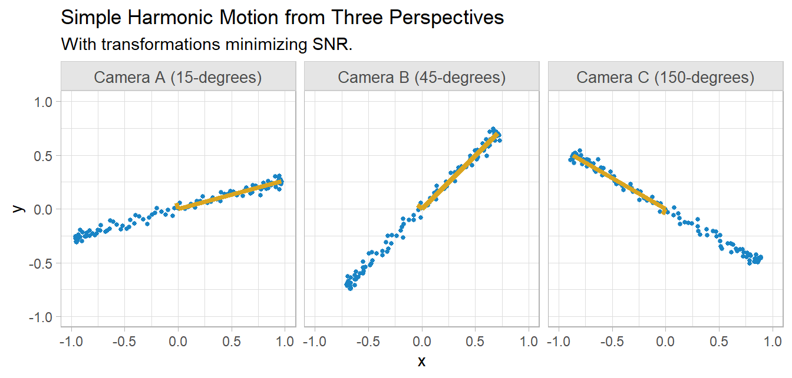
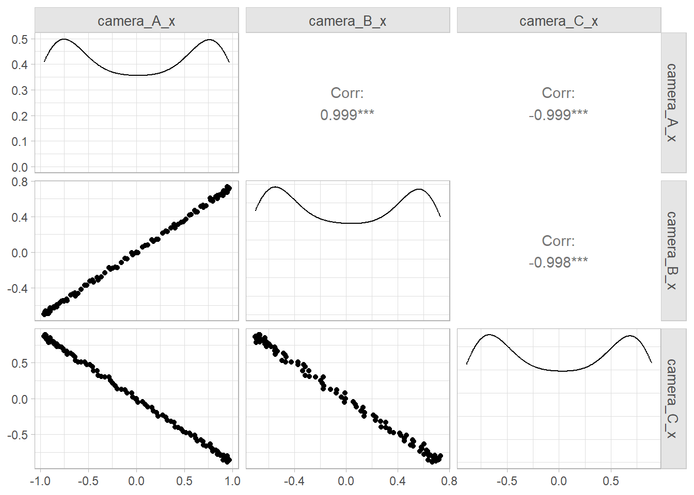

Machine learning datasets often have an enormous number of columns, many of which are correlated because they essentially measure the same latent construct. You could drop redundant columns, but sometimes the redundancy is not obvious, hidden in combinations of columns. Principle components analysis (PCA) reduces the number of columns to a few, interpretable linear combinations while retaining as much information as possible.1
2.1 Intuition
Shlens (2014) introduces PCA with a toy example where the movement of an oscillating spring is monitored by cameras from three positions in a room. Each camera produces a two-dimensional dataset of x and y coordinates, six vectors of numbers altogether. The physical reality is there is only one dimension of movement. PCA should be able to reduce the six vectors into a single principle component.
I’ll simplify the example somewhat to make the math easier. I’ll locate the three cameras in the same spot, x = 0 and y = 0, and rotate them 15 degrees, 45 degrees, and 150 degrees respectively.
Show the code
# 100 photos of the end of the spring taken over 10s of motion.t <-seq(0, 10, length.out =100)# simple harmonic motion from our perspective: 0-degree rotation.x_0 <-sin(2* pi *0.5* t)y_0 <-rnorm(length(t), 0, .03)coords_0 <-matrix(c(x_0, y_0), ncol =2)# 15-degree rotation matrix for camera 1theta_A = pi * (1/12)M_A <-matrix(c(cos(theta_A), -sin(theta_A), sin(theta_A), cos(theta_A)), nrow =2)coords_A <- coords_0 %*% M_A# 45-degree rotation matrix for camera 2theta_B = pi * (1/4)M_B <-matrix(c(cos(theta_B), -sin(theta_B), sin(theta_B), cos(theta_B)), nrow =2)coords_B <- coords_0 %*% M_B# 150-degree rotation matrix for camera 3theta_C = pi * (5/6)M_C <-matrix(c(cos(theta_C), -sin(theta_C), sin(theta_C), cos(theta_C)), nrow =2)coords_C <- coords_0 %*% M_C# Combined datasetspring <-tibble(t = t,camera_A_x = coords_A[, 1],camera_A_y = coords_A[, 2],camera_B_x = coords_B[, 1],camera_B_y = coords_B[, 2],camera_C_x = coords_C[, 1],camera_C_y = coords_C[, 2])
PCA creates as many components as there are variables. The summary table shows the proportion of the variance in the data set explained by each component. The standard deviation of the first component is 2.443 compared to nearly zero for the other five components. It explains essentially all of the dataset variance. The upshot is that you can replace the six columns in the dataset with just this one.
2.2 Matrix Algebra
PCA works by identifying the most meaningful basis to re-express the dataset. In our toy example, the unit basis along the x-axis is the most meaningful. It does this with matrix algebra.
Each row of the dataset may be expressed as a column vector, \(\vec{X}\) that is the x and y values recorded by the three cameras.
\(\vec{X}\) lies in an m=6-dimensional vector space spanned by an orthonormal basis. The orthonormal bases for each camera are \(\{(1,0), (0,1)\}\)from their own perspective, so a data point from camera \(A\) might equivalently be expressed as
An orthonormal basis is any set of vectors whose pairwise inner products are zero. The orthonormal basis for camera \(A\) might be \(\{(\sqrt{2}/2,\sqrt{2}/2), (-\sqrt{2}/2,\sqrt{2}/2)\}\) from a neutral perspective. From the neutral perspective, you would have to rotate the axes 45 degrees.
# M is a 45-degree lineM <-matrix(c(0:100, 0:100*tan(45*(pi/180))), ncol =2)colnames(M) <-c("X", "Y")# M is unchanged after multiplication by identity matrix.I <-matrix(c(1, 0, 0, 1), nrow =2)M1 <- M %*% Icolnames(M1) <-colnames(M)# Rotate M 45-degrees.B <-matrix(c(sqrt(2)/2, sqrt(2)/2, -sqrt(2)/2, sqrt(2)/2), nrow =2)M2 <- M %*% Bcolnames(M2) <-colnames(M)bind_rows(`45 degree line`=as_tibble(M1),`Rotated 45 degrees`=as_tibble(M2),.id ="series") |>ggplot(aes(x = X, y = Y, color = series)) +geom_line() +labs(x =NULL, y =NULL, color =NULL)
Extending this to all three cameras, you might start by naively assuming they collect data from the same perspective, taking each measurement at face value. The set of orthonormal basis vectors, \(\textbf{B}\), would look like this identity matrix
where \(b_1\) and \(b_2\) are the bases used by camera \(A\), etc. Now the data set \(\textbf{X}\) can be expressed as the matrix multiplication, \(\textbf{BX}\). This added complexity allows you to ask whether another basis, \(\textbf{P}\), that is a linear combination of the original basis, better expresses the data set, \(\textbf{PX} = \textbf{Y}\). The linear restriction is a key simplifying assumption of PCA. \(\textbf{P}\) transforms \(\textbf{X}\) into \(\textbf{Y}\), but you can also think of it as rotating and stretching \(\textbf{X}\) into \(\textbf{Y}.\)
So, what transformation is best? The ideal is to maximize variance (signal-to-noise ratio) and minimize covariance (redundancy) in the data. The signal-to-noise ratio is \(SNR = \sigma^2_{signal} / \sigma^2_{noise}\). In each camera’s 2D perspective, the signal is the amplitude of the movement of the spring along the x-axis and the noise is the movement along the y-axis. SNR is maximized by rotating the camera axes (gold below).

The other criteria is redundancy. The three cameras record the same activity, so they are highly correlated.
spring |>select(ends_with("x")) |> GGally::ggpairs()

If \(\textbf{X}\) is an \(m \times n\) matrix of centered values (subtracting the mean), PCA finds an orthonormal matrix \(\textbf{P}\) in \(\textbf{Y} = \textbf{PX}\) such that the covariance matrix \(\textbf{C}_\textbf{Y} = \frac{1}{n}\textbf{YY}^T\) is diagonal. The rows of \(\textbf{P}\) are the principal components of \(\textbf{X}\). The off-diagonal elements of a covariance matrix are the covariances and they measure redundancy. The diagonal elements are the variances and they measure signal.
With matrix algebra, you can express \(\textbf{C}_\textbf{Y}\) in terms of the covariance matrix of \(\textbf{X}\), \(\textbf{C}_\textbf{X}\).
Any symmetric matrix can be diagonalized by an orthogonal matrix of its eigenvectors, \(\textbf{C}_\textbf{X} = \textbf{E}^T\textbf{DE}\). So select \(\textbf{P}\) to be such a matrix.
Let’s drop the unrelated FAC* cols. PCA only works with numerical values. Our questionnaire uses a 7-level scale, so we’re probably okay to treat that as numeric.
Missing values can bias PCA results. If you have missing values, you should either impute, remove the observations, or drop the columns. Fortunately there are no missing values in this dataset.
PCA is based on correlation coefficients, so all variables should be linearly related (r > .3) to at least one other variable.
The next assumption is that the sample sizes should be large. As a rule of thumb, there should be at least 5 cases per variable.
There should be no outliers. Component scores greater than 3 standard deviations away from the mean can have a disproportionate influence on the results.
I found two procedures used to test assumptions (though it does not test all of them). They both operate on the correlation matrix.
corr_mtrx <-cor(pca_numeric)
The first assumption could be tested by querying the matrix for the max correlations. The worst is q20.
The Kaiser-Meyer-Olkin (KMO) measure of sampling adequacy compares the variable correlations to the partial correlations in the data. The test measures sampling adequacy for each variable in the model and for the complete model.2
where \(r_{ij}\) are correlations, and \(u_{ij}\) are partial covariances. Scores range from 0 to 1. Values should be at least .6 to justify a PCA. Values over .8 are preferable.
EFAtools::KMO(corr_mtrx)
── Kaiser-Meyer-Olkin criterion (KMO) ──────────────────────────────────────────
✔ The overall KMO value for your data is meritorious.
These data are probably suitable for factor analysis.
Overall: 0.833
For each variable:
Qu1 Qu2 Qu3 Qu4 Qu5 Qu6 Qu7 Qu8 Qu9 Qu10 Qu11 Qu12 Qu13
0.817 0.740 0.854 0.889 0.909 0.906 0.843 0.829 0.849 0.762 0.744 0.899 0.857
Qu14 Qu15 Qu16 Qu17 Qu18 Qu19 Qu20 Qu21 Qu22 Qu23 Qu24 Qu25
0.824 0.877 0.913 0.880 0.794 0.803 0.834 0.725 0.724 0.831 0.741 0.803
Bartlett’s test of sphericity tests the null hypothesis that the correlation matrix is an identity matrix, i.e., there are no correlations between any variables.
EFAtools::BARTLETT(corr_mtrx, N =nrow(pca_dat))
✔ The Bartlett's test of sphericity was significant at an alpha level of .05.
These data are probably suitable for factor analysis.
𝜒²(300) = 4214.06, p < .001
2.5 Perform PCA
There are two stats package functions for PCA, princomp() and prcomp(). The documentation suggests prcomp() is preferable.
pca_result <-prcomp(pca_numeric, center =TRUE, scale. =TRUE)summary(pca_result)
The top 4 components account for 60% of the variance. Subsequent components add less than 4% of explanatory power. The component loadings show how they relate to each column. Loadings are the eigenvectors of the covariance matrix. They are in the rotatation object returned by prcomp(). You should scale them by standard deviations.
The communality is the proportion of each variable’s variance that is accounted for by the principal components analysis and can also be expressed as a percentage.
A principal components analysis will produce as many components as there are variables. However, the purpose of principal components analysis is to explain as much of the variance in your variables as possible using as few components as possible. After you have extracted your components, there are four major criteria that can help you decide on the number of components to retain: (a) the eigenvalue-one criterion, (b) the proportion of total variance accounted for, (c) the scree plot test, and (d) the interpretability criterion. All except for the first criterion will require some degree of subjective analysis.
2.6 Appendix: Eigenvectors
A square matrix, \(\textbf{A}\), can be decomposed into eigenvalues, \(\lambda\), and eigenvectors, \(\textbf{v}\).3
Equation 2.1 can be re-expressed as \(\textbf{A} \textbf{v} - \lambda \textbf{I} \textbf{v} = 0.\) For \(\textbf{v}\) to be non-zero, the determinant must be zero,
Subtract the matrices and calculate the determinant, \((-6 - \lambda)(5 - \lambda) - 3 \times 4 = 0,\) then solve for \(\lambda = -7 \text{ or } 6.\) Now that you have the possible eigenvalues, plug them back into Equation @ref(eq:eigen1). For \(\lambda = 6\) you have
Solving the system of equations reveals that \(y = 4x\). So \(\begin{bmatrix}1 \\ 4 \end{bmatrix}\) is a solution. You can do the same exercise for \(\lambda = -7\).
Eigenvectors and eigenvalues are useful because matrices are used to make transformations in space. In transformations, the eigenvector is the axis of rotation, the direction that does not change, and the eigenvalue is the scale of the stretch (1 = no change, 2 = double length, -1 = point backwards, etc.).
Shlens, Jonathon. 2014. “A Tutorial on Principal Component Analysis.”arXiv Preprint arXiv:1404.1100. https://arxiv.org/abs/1404.1100.
# PCA {#sec-pca}Machine learning datasets often have an enormous number of columns, many of which are correlated because they essentially measure the same latent construct. You could drop redundant columns, but sometimes the redundancy is not obvious, hidden in combinations of columns. Principle components analysis (PCA) reduces the number of columns to a few, interpretable linear combinations while retaining as much information as possible.^[Material from [PSU](https://online.stat.psu.edu/stat505/lesson/11), [Laerd](https://statistics.laerd.com/premium/spss/pca/pca-in-spss.php), and @shlens2014tutorial.]```{r}#| include: falselibrary(tidyverse)library(scales)```## Intuition@shlens2014tutorial introduces PCA with a toy example where the movement of an oscillating spring is monitored by cameras from three positions in a room. Each camera produces a two-dimensional dataset of x and y coordinates, six vectors of numbers altogether. The physical reality is there is only one dimension of movement. PCA should be able to reduce the six vectors into a single principle component.I'll simplify the example somewhat to make the math easier. I'll locate the three cameras in the same spot, x = 0 and y = 0, and rotate them 15 degrees, 45 degrees, and 150 degrees respectively.```{r}#| code-fold: true# 100 photos of the end of the spring taken over 10s of motion.t <-seq(0, 10, length.out =100)# simple harmonic motion from our perspective: 0-degree rotation.x_0 <-sin(2* pi *0.5* t)y_0 <-rnorm(length(t), 0, .03)coords_0 <-matrix(c(x_0, y_0), ncol =2)# 15-degree rotation matrix for camera 1theta_A = pi * (1/12)M_A <-matrix(c(cos(theta_A), -sin(theta_A), sin(theta_A), cos(theta_A)), nrow =2)coords_A <- coords_0 %*% M_A# 45-degree rotation matrix for camera 2theta_B = pi * (1/4)M_B <-matrix(c(cos(theta_B), -sin(theta_B), sin(theta_B), cos(theta_B)), nrow =2)coords_B <- coords_0 %*% M_B# 150-degree rotation matrix for camera 3theta_C = pi * (5/6)M_C <-matrix(c(cos(theta_C), -sin(theta_C), sin(theta_C), cos(theta_C)), nrow =2)coords_C <- coords_0 %*% M_C# Combined datasetspring <-tibble(t = t,camera_A_x = coords_A[, 1],camera_A_y = coords_A[, 2],camera_B_x = coords_B[, 1],camera_B_y = coords_B[, 2],camera_C_x = coords_C[, 1],camera_C_y = coords_C[, 2])``````{r}glimpse(spring)```Here are the x-y coordinates recorded from the cameras' perspectives..```{r}#| echo: false#| fig-height: 3.25spring_longer <- spring |>pivot_longer(starts_with("camera_"), names_to =c("Camera", "Coord"),names_pattern ="camera_(.)_(.)" ) |>mutate(Camera =case_when( Camera =="A"~"Camera A (15-degrees)", Camera =="B"~"Camera B (45-degrees)", Camera =="C"~"Camera C (150-degrees)" ) ) |>mutate(.by =c(Camera, Coord), Obs =row_number()) |>pivot_wider(names_from = Coord, values_from = value)spring_longer |>ggplot(aes(x = x, y = y)) +geom_point(size =1, color = my_palette$blue_red[1]) +coord_cartesian(xlim =c(-1, 1), ylim =c(-1, 1)) +facet_wrap(vars(Camera), nrow =1) +labs(title ="Simple Harmonic Motion from Three Perspectives")```We can perform a PCA in a single step. The `center` and `scale.` arguments are because PCA should operate on standardized data.```{r}spring_pca <- spring |>select(-t) |>prcomp(center =TRUE, scale. =TRUE)summary(spring_pca)```PCA creates as many components as there are variables. The summary table shows the proportion of the variance in the data set explained by each component. The standard deviation of the first component is `r comma(spring_pca$sdev[1], .001)` compared to nearly zero for the other five components. It explains essentially all of the dataset variance. The upshot is that you can replace the six columns in the dataset with just this one.## Matrix AlgebraPCA works by identifying the most meaningful basis to re-express the dataset. In our toy example, the unit basis along the *x*-axis is the most meaningful. It does this with matrix algebra.Each row of the dataset may be expressed as a column vector, $\vec{X}$ that is the *x* and *y* values recorded by the three cameras.$$\vec{X} = \begin{bmatrix} A_x \\ A_y \\ B_x \\ B_y \\ C_x \\ C_y \end{bmatrix}$$$\vec{X}$ lies in an *m=6*-dimensional vector space spanned by an orthonormal basis. The orthonormal bases for each camera are $\{(1,0), (0,1)\}$ _from their own perspective_, so a data point from camera $A$ might equivalently be expressed as $$\begin{bmatrix} 1 & 0 \\ 0 & 1 \end{bmatrix} \begin{bmatrix} A_x \\ A_y \end{bmatrix}$$::: {.callout-tip collapse="true"}## Note on Orthonormal BasesAn orthonormal basis is any set of vectors whose pairwise inner products are zero. The orthonormal basis for camera $A$ might be $\{(\sqrt{2}/2,\sqrt{2}/2), (-\sqrt{2}/2,\sqrt{2}/2)\}$ from a neutral perspective. From the neutral perspective, you would have to rotate the axes 45 degrees.```{r}#| fig-height: 3#| fig-width: 5# M is a 45-degree lineM <-matrix(c(0:100, 0:100*tan(45*(pi/180))), ncol =2)colnames(M) <-c("X", "Y")# M is unchanged after multiplication by identity matrix.I <-matrix(c(1, 0, 0, 1), nrow =2)M1 <- M %*% Icolnames(M1) <-colnames(M)# Rotate M 45-degrees.B <-matrix(c(sqrt(2)/2, sqrt(2)/2, -sqrt(2)/2, sqrt(2)/2), nrow =2)M2 <- M %*% Bcolnames(M2) <-colnames(M)bind_rows(`45 degree line`=as_tibble(M1),`Rotated 45 degrees`=as_tibble(M2),.id ="series") |>ggplot(aes(x = X, y = Y, color = series)) +geom_line() +labs(x =NULL, y =NULL, color =NULL)```:::Extending this to all three cameras, you might start by naively assuming they collect data from the _same perspective_, taking each measurement at face value. The set of orthonormal basis vectors, $\textbf{B}$, would look like this identity matrix$$\textbf{B} = \begin{bmatrix} b_1 \\ b_2 \\ \vdots \\ b_m \end{bmatrix} = \begin{bmatrix} 1 & 0 & \cdots & 0 \\ 0 & 1 & \cdots & 0 \\ \vdots & \vdots & \ddots & \vdots \\ 0 & 0 & \cdots & 1 \end{bmatrix}$$where $b_1$ and $b_2$ are the bases used by camera $A$, etc. Now the data set $\textbf{X}$ can be expressed as the matrix multiplication, $\textbf{BX}$. This added complexity allows you to ask whether another basis, $\textbf{P}$, _that is a linear combination of the original basis_, better expresses the data set, $\textbf{PX} = \textbf{Y}$. The _linear_ restriction is a key simplifying assumption of PCA. $\textbf{P}$ transforms $\textbf{X}$ into $\textbf{Y}$, but you can also think of it as rotating and stretching $\textbf{X}$ into $\textbf{Y}.$So, what transformation is best? The ideal is to maximize variance (signal-to-noise ratio) and minimize covariance (redundancy) in the data. The signal-to-noise ratio is $SNR = \sigma^2_{signal} / \sigma^2_{noise}$. In each camera's 2D perspective, the signal is the amplitude of the movement of the spring along the x-axis and the noise is the movement along the y-axis. SNR is maximized by rotating the camera axes (gold below).```{r}#| echo: false#| fig-height: 3.35signal_0 <-matrix(c(0, 1, 0, 0), ncol =2)noise_0 <-matrix(c(0, 0, 0, max(y_0)), ncol =2)signal_A <- signal_0 %*% M_Asignal_B <- signal_0 %*% M_Bsignal_C <- signal_0 %*% M_Cnoise_A <- noise_0 %*% M_Anoise_B <- noise_0 %*% M_Bnoise_C <- noise_0 %*% M_Csignal <-tibble(Camera =unique(spring_longer$Camera),x_0 =c(signal_A[1, 1], signal_B[1, 1], signal_C[1, 1]),x_1 =c(signal_A[2, 1], signal_B[2, 1], signal_C[2, 1]),y_0 =c(signal_A[1, 2], signal_B[1, 2], signal_C[1, 2]),y_1 =c(signal_A[2, 2], signal_B[2, 2], signal_C[2, 2]))noise <-tibble(Camera =unique(spring_longer$Camera),x_0 =c(noise_A[1, 1], noise_B[1, 1], noise_C[1, 1]),x_1 =c(noise_A[2, 1], noise_B[2, 1], noise_C[2, 1]),y_0 =c(noise_A[1, 2], noise_B[1, 2], noise_C[1, 2]),y_1 =c(noise_A[2, 2], noise_B[2, 2], noise_C[2, 2]))spring_longer |>ggplot(aes(x = x, y = y)) +geom_point(size =1, color = my_palette$blue_red[1]) +coord_cartesian(xlim =c(-1, 1), ylim =c(-1, 1)) +geom_segment(data = signal, aes(x = x_0, xend = x_1, y = y_0, yend = y_1),color ="goldenrod", linewidth =1.5) +geom_segment(data = noise, aes(x = x_0, xend = x_1, y = y_0, yend = y_1),color ="goldenrod", linewidth =1.5) +facet_wrap(vars(Camera), nrow =1) +labs(title ="Simple Harmonic Motion from Three Perspectives",subtitle ="With transformations minimizing SNR.")```The other criteria is redundancy. The three cameras record the same activity, so they are highly correlated. ```{r}#| warning: falsespring |>select(ends_with("x")) |> GGally::ggpairs()```If $\textbf{X}$ is an $m \times n$ matrix of centered values (subtracting the mean), PCA finds an orthonormal matrix $\textbf{P}$ in $\textbf{Y} = \textbf{PX}$ such that the covariance matrix $\textbf{C}_\textbf{Y} = \frac{1}{n}\textbf{YY}^T$ is diagonal. The rows of $\textbf{P}$ are the principal components of $\textbf{X}$. The off-diagonal elements of a covariance matrix are the covariances and they measure redundancy. The diagonal elements are the variances and they measure signal.With matrix algebra, you can express $\textbf{C}_\textbf{Y}$ in terms of the covariance matrix of $\textbf{X}$, $\textbf{C}_\textbf{X}$.$$\begin{align}\textbf{C}_\textbf{Y} &= \frac{1}{n}\textbf{YY}^T \\&= \frac{1}{n}(\textbf{PX})(\textbf{PX})^T \\&= \frac{1}{n}\textbf{PXX}^T\textbf{P}^T \\&= P\left(\frac{1}{n}\textbf{XX}^T\right)\textbf{P}^T \\&= \textbf{PC}_\textbf{X}\textbf{P}^T\end{align}$$Any symmetric matrix can be diagonalized by an orthogonal matrix of its eigenvectors, $\textbf{C}_\textbf{X} = \textbf{E}^T\textbf{DE}$. So select $\textbf{P}$ to be such a matrix.$$\begin{align}\textbf{C}_\textbf{Y} &= \textbf{PC}_\textbf{X}\textbf{P}^T \\&= \textbf{P}(\textbf{E}^T\textbf{DE})\textbf{P}^T \\&= \textbf{P}(\textbf{P}^T\textbf{DP})\textbf{P}^T \\&= (\textbf{PP}^T)\textbf{D}(\textbf{PP}^T) \\&= (\textbf{PP}^{-1})\textbf{D}(\textbf{PP}^{-1}) \\&= \textbf{D}\end{align}$$## Case StudyLet's work with a case study presented by [Laerd](https://statistics.laerd.com/premium/spss/pca/pca-in-spss.php). 315 job candidates complete a questionnaire consisting of 25 questions.```{r}#| include: falselikert_scale <-c("Strongly Agree", "Agree", "Agree Somewhat", "Undecided", "Disagree Somewhat","Disagree", "Strongly Disagree")``````{r}pca_dat <- foreign::read.spss("./input/pca.sav", to.data.frame =TRUE) |>mutate(across(where(is.factor), ~factor(., levels = likert_scale, ordered =TRUE)) )glimpse(pca_dat)``````{r}#| include: falsen <-nrow(pca_dat)q_colnames <- pca_dat %>%select(Qu1:Qu25) %>%colnames()```The questions focused on four attributes: motivation, dependability, enthusiasm, and commitment.```{r}#| include: falsegt_items <-function(items) { pca_dat |>select(all_of(items)) |>pivot_longer(everything()) |>mutate(name =fct_drop(factor(name, levels = q_colnames))) |> gtsummary::tbl_summary(by ="value", percent ="row", label =list(name ~"")) |> gtsummary::as_gt()}q_motivation <-c("Qu3", "Qu4", "Qu5", "Qu6", "Qu7", "Qu8", "Qu12", "Qu13")q_dependability <-c("Qu2", "Qu14", "Qu15", "Qu16", "Qu17", "Qu18", "Qu19")q_enthusiasm <-c("Qu20", "Qu21", "Qu22", "Qu23", "Qu24", "Qu25")q_commitment <-c("Qu1", "Qu9", "Qu10", "Qu11")```::: panel-tabset### Motivaton```{r}gt_items(q_motivation)```### Dependability```{r}gt_items(q_dependability)```### Enthusiasm```{r}gt_items(q_enthusiasm)```### Commitment```{r}gt_items(q_commitment)```:::Let's drop the unrelated `FAC*` cols. PCA only works with numerical values. Our questionnaire uses a 7-level scale, so we're probably okay to treat that as numeric.```{r}pca_numeric <- pca_dat |>select(starts_with("Qu")) |>mutate(across(everything(), as.numeric))```## AssumptionsMissing values can bias PCA results. If you have missing values, you should either impute, remove the observations, or drop the columns. Fortunately there are no missing values in this dataset.```{r}colSums(is.na(pca_numeric))```There are a few other assumptions to be aware of:- PCA is based on correlation coefficients, so all variables should be linearly related (*r* > .3) to at least one other variable.- The next assumption is that the sample sizes should be large. As a rule of thumb, there should be at least 5 cases per variable. - There should be no outliers. Component scores greater than 3 standard deviations away from the mean can have a disproportionate influence on the results.I found two procedures used to test assumptions (though it does not test all of them). They both operate on the correlation matrix.```{r}corr_mtrx <-cor(pca_numeric)```The first assumption could be tested by querying the matrix for the max correlations. The worst is q20.```{r}#| code-fold: true# ggcorrplot::ggcorrplot(corr_mtrx)max_cor <-as_tibble(corr_mtrx) |>mutate(var1 =factor(q_colnames, levels = q_colnames)) |>pivot_longer(cols =c(Qu1:Qu25), names_to ="var2", values_to ="rho") |>filter(var1 != var2) |>slice_max(by = var1, order_by = rho, n =1)max_cor_v <-round(max_cor$rho, 2)names(max_cor_v) <- max_cor$var1max_cor_v```The Kaiser-Meyer-Olkin (KMO) measure of sampling adequacy compares the variable correlations to the partial correlations in the data. The test measures sampling adequacy for each variable in the model and for the complete model.^[See [Statistics How-to](https://www.statisticshowto.com/kaiser-meyer-olkin/).]$$\text{KMO}_j = \frac{\sum_{i \ne j}r_{ij}^2}{\sum_{i \ne j}r_{ij}^2 + \sum_{i \ne j} u}$$where $r_{ij}$ are correlations, and $u_{ij}$ are partial covariances. Scores range from 0 to 1. Values should be at least .6 to justify a PCA. Values over .8 are preferable.```{r}EFAtools::KMO(corr_mtrx)```Bartlett's test of sphericity tests the null hypothesis that the correlation matrix is an identity matrix, i.e., there are no correlations between any variables.```{r}EFAtools::BARTLETT(corr_mtrx, N =nrow(pca_dat))```## Perform PCAThere are two stats package functions for PCA, `princomp()` and `prcomp()`. The documentation suggests `prcomp()` is preferable. ```{r}pca_result <-prcomp(pca_numeric, center =TRUE, scale. =TRUE)summary(pca_result)```The top 4 components account for 60% of the variance. Subsequent components add less than 4% of explanatory power. The *component loadings* show how they relate to each column. Loadings are the eigenvectors of the covariance matrix. They are in the `rotatation` object returned by `prcomp()`. You should scale them by standard deviations. ```{r}pca_loadings <- pca_result$rotation %*%diag(pca_result$sdev)```Here are the loadings from the top 8 components.```{r}#| code-fold: truecolnames(pca_loadings) <-paste0("pc", 1:25)pca_loadings |>as_tibble(rownames ="Q") |>mutate(Area =case_when( Q %in% q_motivation ~"Motivation", Q %in% q_dependability ~"Dependability", Q %in% q_enthusiasm ~"Enthusiasm", Q %in% q_commitment ~"Commitment" )) |>select(Area, Q, pc1:pc8) |>arrange(Area, Q) |> gt::gt() |> gt::fmt_number(pc1:pc8, decimals =3) |> gt::data_color(columns = pc1:pc8, method ="numeric",palette =c("firebrick", "white", "dodgerblue3"),domain =c(-1, 1) ) |> gt::tab_row_group(label ="Commitment", rows = Area =="Commitment") |> gt::tab_row_group(label ="Enthusiasm", rows = Area =="Enthusiasm") |> gt::tab_row_group(label ="Dependability", rows = Area =="Dependability") |> gt::tab_row_group(label ="Motivation", rows = Area =="Motivation") |> gt::cols_hide(columns = Area) |> gt::tab_header("Factor loadings by survey area.") |> gt::tab_options(heading.align ="left")``````{r}biplot(pca_result, scale =0)pca_result$sdev^2/sum(pca_result$sdev^2)```The communality is the proportion of each variable's variance that is accounted for by the principal components analysis and can also be expressed as a percentage. A principal components analysis will produce as many components as there are variables. However, the purpose of principal components analysis is to explain as much of the variance in your variables as possible using as few components as possible. After you have extracted your components, there are four major criteria that can help you decide on the number of components to retain: (a) the eigenvalue-one criterion, (b) the proportion of total variance accounted for, (c) the scree plot test, and (d) the interpretability criterion. All except for the first criterion will require some degree of subjective analysis. ## Appendix: EigenvectorsA square matrix, $\textbf{A}$, can be decomposed into eigenvalues, $\lambda$, and eigenvectors, $\textbf{v}$.^[Took these notes from [Math is Fun](https://www.mathsisfun.com/algebra/eigenvalue.html).]$$\textbf{A} \textbf{v} = \lambda \textbf{v}$$ {#eq-eigen1}For example, $6$ and $\begin{bmatrix}1 \\ 4 \end{bmatrix}$ are an eigenvalue and eigenvector here:$$\begin{bmatrix} -6 & 3 \\ 4 & 5 \end{bmatrix} \begin{bmatrix}1 \\ 4 \end{bmatrix} = 6 \begin{bmatrix}1 \\ 4 \end{bmatrix}$$@eq-eigen1 can be re-expressed as $\textbf{A} \textbf{v} - \lambda \textbf{I} \textbf{v} = 0.$ For $\textbf{v}$ to be non-zero, the determinant must be zero, $$| \textbf{A} - \lambda \textbf{I}| = 0$$ {#eq-eigen2}Back to the example, use @eq-eigen2 to find possible eigenvalues.$$\left| \begin{bmatrix} -6 & 3 \\ 4 & 5 \end{bmatrix} - \lambda \begin{bmatrix} 1 & 0 \\ 0 & 1 \end{bmatrix} \right| = 0$$Subtract the matrices and calculate the determinant, $(-6 - \lambda)(5 - \lambda) - 3 \times 4 = 0,$ then solve for $\lambda = -7 \text{ or } 6.$ Now that you have the possible eigenvalues, plug them back into Equation \@ref(eq:eigen1). For $\lambda = 6$ you have$$\begin{bmatrix} -6 & 3 \\ 4 & 5 \end{bmatrix} \begin{bmatrix}x \\ y \end{bmatrix} = 6 \begin{bmatrix}x \\ y \end{bmatrix}$$Solving the system of equations reveals that $y = 4x$. So $\begin{bmatrix}1 \\ 4 \end{bmatrix}$ is a solution. You can do the same exercise for $\lambda = -7$.Eigenvectors and eigenvalues are useful because matrices are used to make transformations in space. In transformations, the eigenvector is the axis of rotation, the direction that does not change, and the eigenvalue is the scale of the stretch (1 = no change, 2 = double length, -1 = point backwards, etc.).